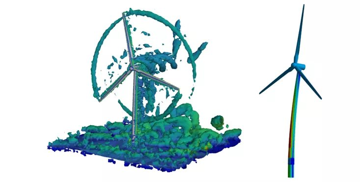
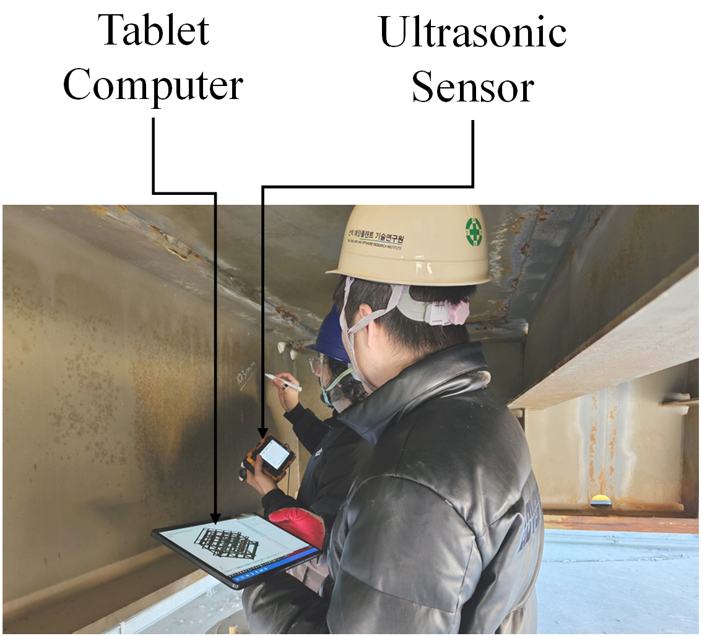
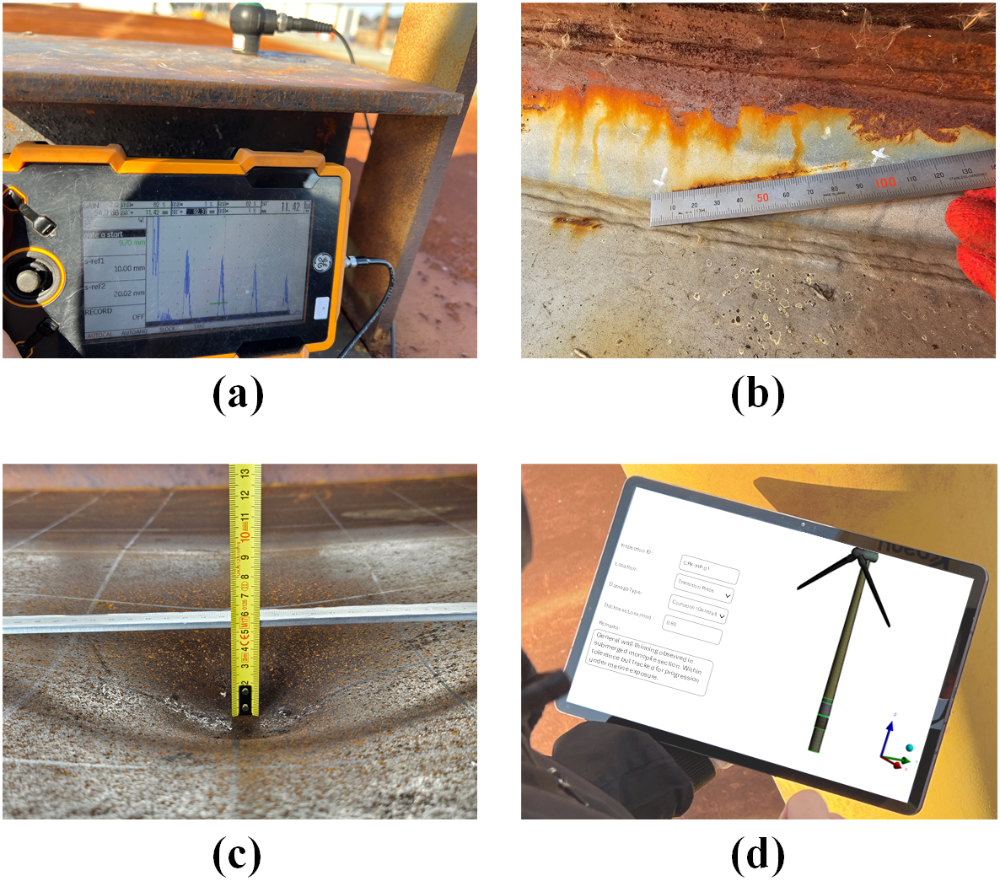
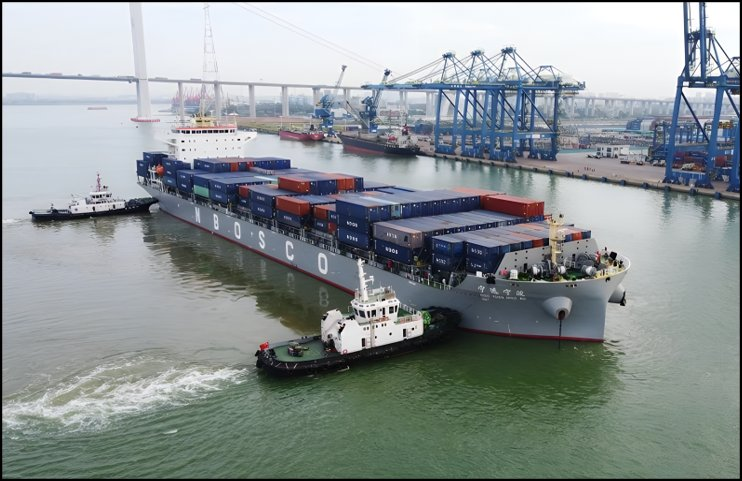
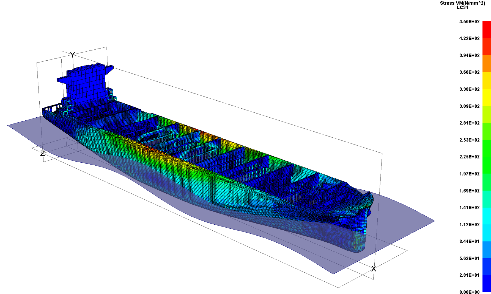

A Framework for Lifecycle Digitalisation
Keeping aging ships and offshore structures safe across their entire service life.
DHE is a modular framework that connects real-time structural monitoring, digital twins, AI-driven diagnostics, and predictive maintenance into a single, continuous system — applied to ships, offshore wind turbines, jacket platforms, subsea pipelines, and beyond.
Overview
DHE treats engineering structures the way modern medicine treats a patient: through continuous monitoring, accurate diagnosis, and timely intervention.
Ships and offshore structures operate in some of the most demanding environments on earth — subjected to corrosion, fatigue cracking, and mechanical damage across decades of service, often in remote locations far from inspection and maintenance facilities.
Conventional maintenance strategies, based on scheduled dry-docking and reactive repair, are increasingly unable to keep pace with the scale and complexity of aging infrastructure. Digital Healthcare Engineering addresses this gap by giving every structure a continuous, data-driven health picture — from sensors in the field, through analytics on shore, to predictive maintenance decisions well before failure.
Just as a doctor monitors vital signs, diagnoses early, and prescribes treatment in time — DHE does the same for steel structures at sea.
Metal loss from seawater exposure progressively reduces structural capacity and is difficult to quantify without continuous monitoring.
Cyclic loading from waves, wind, and operational forces accumulates damage that can propagate undetected without real-time sensing.
Impact events, denting, and deformation alter structural performance in ways that static inspection intervals cannot reliably capture.
Offshore structures are far from shore and human expertise, making continuous digital oversight essential rather than optional.
The Five Modules
The framework is modular by design — each component can be developed, deployed, and validated independently while feeding the whole system. Together they form a closed loop from field sensing to maintenance action.
In-service measurement and digitisation of structural health parameters using portable and fixed sensors.
Reliable transfer of field data to land-based analytics centres, including via satellite link from remote locations.
Advanced structural simulation and data analytics using a digital twin of the physical asset.
Machine learning and AI-driven assessment of structural condition, with automated recommendations for remedial action.
Forecasting future condition to plan inspection and maintenance optimally over the remaining service life.
Applications
Since its proposal the DHE framework has been extended and applied across a growing range of marine and offshore asset classes by researchers at UCL and collaborating institutions worldwide.
Ageing monopile foundations under combined wind, wave, and rotor loading — including corrosion, fatigue, and storm-condition assessments.
Hull structural health monitoring, digital twin modelling, and predictive maintenance for ageing commercial vessels including containerships.
Safety and sustainability assessment of ageing jacket platforms in extreme weather, incorporating DHE diagnostics and maintenance planning.
State-of-the-art reviews and data-driven methods for DHE-based monitoring and maintenance of ageing offshore pipeline infrastructure.
Feasibility assessment of DHE for ageing LNG storage tanks in seismic environments, extending the framework onshore.
Human Digital Healthcare Engineering — applying the same framework principles to monitoring and improving the health of seafarers and offshore workers.
In Practice



The framework has also been applied to ageing containership hulls, demonstrated on the container ship Ning Yuan (Ningbo) by Hyeong-Jin Kim within the UCL research group.


Research
The framework was first proposed in 2021 and has since grown into an active international research field, with studies spanning ships, offshore wind, jacket platforms, LNG tanks, pipelines, and seafarer health.
Originating & core framework work
Applications and extensions
For the full publication record including under-review manuscripts see azizsindi.github.io or the UCL Marine Safety and DHE Group.
The Researcher
The modular framework for lifecycle digitalisation at the core of Digital Healthcare Engineering was first proposed by Abdulaziz Faisal Sindi during his doctoral research at University College London. Beginning with his 2021 conference paper, the framework has developed into DHE and expanded into an active research programme spanning multiple asset classes and institutions.
Abdulaziz is a PhD researcher in the Department of Mechanical Engineering at UCL, working at the intersection of structural integrity, digital twins, and AI-driven diagnostics for marine and offshore infrastructure. His thesis applies the DHE framework specifically to ageing monopile offshore wind turbines.
The work is supported by a full doctoral scholarship from the Kingdom of Saudi Arabia, administered through the Saudi Arabian Cultural Bureau in London, and has been recognised with a Certificate of Innovation from the Royal Embassy of Saudi Arabia Cultural Bureau in London.